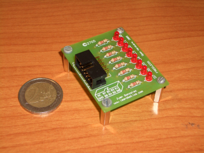
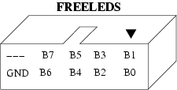

|
|
Esta página ya no se mantiene más (17/Diciembre/2007) |
|
Tarjeta Freeleds 1.0 |
|

|
Tarjeta de prueba con 8 leds y conector para cable de tipo bus. Se conecta directamente a los puertos de la tarjeta Skypic. Se ha desarrollado para validar la herramienta de desarrollo electrónico Kicad, que es libre, y comprobar si con ella se pueden diseñar placas de calidad industrial.
La Freeleds es una de las primeras placas que es hardware libre y que se ha diseñado con una herramienta libre.
8 leds de 3mm
Dimensiones: 5 x 4.1 cm
Placa a simple cara
Conexión a través de un cable plano de tipo bus de 10 hilos.
Hardware Libre
Plataforma de desarrollo: máquina con Debian Sarge Linux
Diseñada con Kicad
Los motivos principales por lo que he diseñado esta placa son:
Cuando descubrí de la existencia de la herramienta libre de diseño electrónico Kicad, no pude por menos que empezar a probarla y para ello me planteé construir la placa “hola mundo” más sencilla posible.
Quería validar el Kicad y comprobar si con esta herramienta libre podrían construirse placas industriales. La respuesta es que sí.
Quería hacer una de las primeras placas hardware libre creadas con un software libre. Es decir, crear mi primera placa de tipo LLL, según la nomenclatura descrita en el artículo: “Hardware libre: clasificación y desarrollo de hardware reconfigurable en entornos GNU/Linux”
La principal aplicación es su conexión al puerto B de la tarjeta Skypic para visualizar información a través de los leds y depurar las aplicaciones. Es muy útil cuando se está aprendiendo a programar el microcontrolador PIC, o en los talleres de robótica que impartimos.
|
|
Aprendizaje sobre cómo crear placas industriales. Los interesados pueden mirar los planos de la freeled para ver qué parametros se están usando: ancho de las pistas, tamaño de los taladro, anchura de las líneas de serigrafía, etc.
Hardware libre. Se conceden permisos para su fabricación, copia, modificación, venta o distribución siempre y cuando vaya acompañada de todos los esquemas.
La tarjeta Freeleds es un diseño derivado de la tarjeta libre PCTLED, diseñada por Andrés Prieto-Moreno Torres.
En Julio de 2005 se hizo la primera tirada, de 55 unidades. Fabricada en Electrocir. Versión de Kicad empleada: Release del 29-Agosto-2005
La Freeleds dispone de un conector acodado de 10 pines. En la siguiente figura se muestra la asignación de los pines. B0 se corresponde con el led de meno peso (D0).
|
 |
|
Tarjeta Freeleds |
|
Esquemático en formato PDF |
|
|
PCB. Cara del cobre. En formato PDF |
|
|
Serigrafías. Cara de los componetes. Formato PDF. |
|
|
Planos de la Freeleds para Kicad |
|
|
Ficheros de Fabricación y taladros. (Gerber) |
Todos los componentes de esta placa se encuentran en una librería separa: monolito.lib para los elementos del esquema y monolito.mod para los “footprint” del PCB. Es necesario cargar esta librería para su correcta visualización:
En el esquemático ir a la opción: Preferencias/Bibliotecas y Directorios/Insertar y añadir la librería monolito.lib
Herramienta libre de diseño electrónico, Kicad
20/Octubre/2005: Publicada primera versión de esta página
Andrés Prieto-Moreno Torres es el autor de la placa PCTLED, de la que se ha derivado la freeleds.
A Andrés Prieto-Moreno Torres por gestionar la fabricación de la freeleds a través de Ifara. ¡Muchas gracias!
A Jean-Pierre Charras, creador del Kicad. Muchas gracias por esta estupenda herramienta.